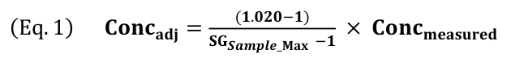
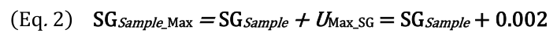

Technical Documents · ISL TD2027MRL
Edition v1.0, 2027 (version 1.0) · effective 1 January 2027 · current
Retrieved on 26 November 2026 from https://www.wada-ama.org/sites/default/files/2026-03/td2027mrl_v1.0_eng.pdf
p. 1
MINIMUM REPORTING LEVELS APPLIED IN DOPING CONTROL
1.0 Introduction
The objective of this Technical Document (TD), which constitutes an integral part of the International Standard for Laboratories (ISL[1]), is to harmonize the reporting by Laboratories of Adverse Analytical Findings (AAFs) for certain Non-Threshold Substances in urine Samples. For this, Minimum Reporting Levels (MRLs) have been established as a Laboratory reporting requirement.
2.0 Confirmation Procedure Requirements for Non-Threshold Substances Subject to a Minimum Reporting Level
The Confirmation Procedure (CP) of Non-Threshold Substances with an MRL shall be based, at a minimum, on the use of the following:
a) An adequate internal standard (ISTD).
b) A Single-Point Calibrator (SPC) prepared in the matrix of analysis (e.g., urine) at a concentration corresponding to 150% of the MRL.
The SPC shall be used to estimate the concentration of the Analyte in the Sample. This estimation shall be based on the comparison of the analytical signal ratio (relative to the ISTD) of the Analyte in the Sample with the corresponding analytical signal ratio of the Analyte in the SPC.
c) A Quality Control (QC) sample prepared at a concentration corresponding to the MRL in the same matrix of analysis as the SPC.
The QC sample(s) shall be prepared from a different batch or different stock solution of Reference Material (RM) than the SPC.
[Comment to Article 2.0: Additional QCs and Calibrators can also be used by the Laboratories. For example, the Laboratory may also use an additional Calibrator with a concentration closer to the level estimated in the Sample whenever the Analyte concentration estimated during the ITP is well higher than the MRL (e.g., ≥ 5 x MRL).]
d) A CP ensuring that the same analytical conditions applied to estimate the concentration(s) of the Analyte(s) is applied for the identification of the Analyte(s) in accordance with the identification criteria defined in the ISL TD IDCR[2].
The Analyte and ISTD in the Sample, SPC, and QC shall be analyzed under analytical conditions that ensure the reliable identification of the Analyte and the estimation of its concentration in the Sample.
p. 2
3.0 Reporting Requirements for Non-Threshold Substances Subject to an MRL
3.1 Reporting of Findings at Estimated Concentrations higher than (>) the MRL.
3.1.1 "A" Sample
To report an AAF for a Non-Threshold Substance subject to an MRL, the Laboratory shall establish with sufficient confidence that the Analyte of the Non-Threshold Substance is present in the "A" Sample at an estimated concentration level exceeding the MRL, in accordance with the following criteria:
a) The ISL TD IDCR[2] identification criteria for the Analyte in the Sample are met, and
b) The estimated concentration of the Analyte in the Sample, as defined in Table 1, shall be higher than (>) the SPC concentration (i.e., > 150% of the MRL), and the estimated concentration of the Analyte in the QC shall be lower than (<) the SPC concentration (i.e., < 150% of the MRL), and
[Comment to Article 3.1.1 b): The Laboratory can confidently conclude that the concentration of the Analyte in the Sample exceeds the MRL only when it exceeds the concentration of the Analyte in the SPC (i.e., > 150% of the MRL), which in turn exceeds the concentration of the Analyte in the QC.]
c) When the Specific Gravity (SG) of the urine "A" Sample (SGSample) is higher than (>) 1.018 (as measured by the Laboratory during the CP), and the estimated concentration of the Analyte fulfils the criterion b) above, the concentration shall be adjusted to a SG = 1.020 as per Eq. 1 below. The finding would constitute an AAF only if the adjusted concentration (Concadj) exceeds 150% of the MRL.

Where SGSample_Max is calculated as:

d) If reporting the estimated concentration (adjusted for SGSample, where applicable) of the Analyte in a Sample is necessary (e.g., upon written request by the Testing Authority (TA) or Results Management Authority (RMA), if different, or WADA), the Laboratory shall express the value to the same number of significant figures as the corresponding MRL.
3.1.2 "B" Sample
The "B" Sample result for a Non-Threshold Substance subject to an MRL shall only confirm the presence of the Analyte(s) (in compliance with the ISL TD IDCR[2]) in the Sample, at any concentration, for the AAF to be valid.
p. 3
3.2 Reporting of Findings at Estimated Concentrations not higher than (≤) the MRL
There are specific circumstances where the Laboratory may report the presence of a Non-Threshold Substance subjected to an MRL when the Non-Threshold Substance is present in a Sample at an estimated concentration ≤ MRL (adjusted for SGSample, where applicable as per Article 3.1.1.c).
3.2.1 Reporting for Results Management and Target Testing Purposes
a) The Laboratory shall report findings at an estimated concentration ≤ MRL as Atypical Findings (ATFs) as established in the relevant ISL TDs[3-4] or ISL TLs[5-7].
b) For avoidance of doubt, as established in the ISL[1], nothing shall prevent the Laboratory, upon written request by the TA or RMA (if different) or WADA, from disclosing to the requesting Anti-Doping Organization (ADO) information about the presence of a Non-Threshold Substance with an MRL at an estimated concentration ≤ MRL. A justification to do so, as provided by the ADO (e.g., if the analysis is part of a Results Management process, an ongoing investigation, or Target Testing of the Athlete), shall be kept as part of the Sample records.
3.2.2 Reporting an Atypical Finding in the Co-Presence of a Diuretic or Masking Agent
The Laboratory shall report the finding for a Non-Threshold Substance subject to MRL at an estimated concentration ≤ MRL as an ATF when the Analyte is identified (in compliance with the ISL TD IDCR[2]) in the co-presence of a diuretic or masking agent in the Sample. If the diuretic or masking agent is subject to an MRL, its estimated concentration shall be higher than (>) the relevant MRL, as established in accordance with Article 3.1.
[Comment to Article 3.2.2: As per the ISL Article 5.3.4.1.3[1], when there is a Presumptive Adverse Analytical Finding (PAAF) for a diuretic, the Laboratory may contact the TA (or RMA, if different) to enquire whether an approved Therapeutic Use Exemption exists for the diuretic. However, where a diuretic is detected in a Sample together with a Non-Threshold Substance subject to MRL, the Laboratory shall proceed with the CP of both substances and report the confirmed findings according to this ISL TD MRL. Whether there is an approved Therapeutic Use Exemption for the diuretic and/or the Non-Threshold Substance shall be determined during the Results Management process.]
p. 4
4.0 List of Minimum Reporting Levels per Class of Prohibited Substances
Table 1 specifies the Non-Threshold Substances that are subject to MRL, according to the corresponding Prohibited Substance class (as defined in the Prohibited List[8]), and the applicable MRL (in ng/mL).
Table 1 also includes a Comments column providing guidance and references for the correct application of the MRLs. Wherever the target Analyte(s) specified in this column are defined as the total content of the free (non-conjugated) substance and its respective phase-II glucuro- and/or sulfconjugated Metabolites expressed as free compound equivalent, the determination can be performed by the Laboratory either after deconjugation (where the total content is obtained from the sum of the free fraction plus that released from the phase-II glucuronidated/sulfated fraction after hydrolysis) or through the direct detection of the free compound and the conjugated phase-II Metabolite(s).
[Comment to Article 4.0: When the target Analyte is referred to as "free (non-conjugated) parent compound form", this means that Laboratories shall target only the unmodified form of the substance, without considering any phase-I or phase-II Metabolites].
Table 1. MRLs applicable to urine Samples per Class of Prohibited Substances or Prohibited Method
| Prohibited Class | Group | Substance | MRL (ng/mL) | Comments |
|---|---|---|---|---|
| S1.1 Anabolic Androgenic Steroids (AAS) | The MRL applies only to the following AAS: 6α-hydroxy-androstenedione (6α-OH-AD), 19-norandrosterone (19-NA), and boldenone and its Metabolite (5β-androst-1-en-17β-ol-3-one). | |||
| S1.1 Anabolic Androgenic Steroids (AAS) | 6α-OH-AD | 10 | This MRL is applied to the total content of 6α-OH-AD, including the free, non-conjugated 6α-OH-AD and its phase-II glucuroconjugated form, expressed as 6α-OH-AD equivalent. Samples with 6α-OH-AD concentrations above the MRL and no signs of extensive Sample degradation shall be subjected to GC/C/IRMS analysis. Refer to the ISL TD MRPL [9], ISL TD IRMS [3] and ISL TL21 [10]. | |
| S1.1 Anabolic Androgenic Steroids (AAS) | 19-NA | 15 | This MRL is applied to the total content of 19-NA, including the free, non-conjugated 19-NA and its phase-II glucuroconjugated form, expressed as 19-NA equivalent. Analytical findings with 19-NA concentrations above the MRL shall be reported as AAF without the need to conduct GC/C/IRMS analysis (except for females who are pregnant or using norethisterone) [4]. Refer to the ISL TD MRPL [9] and ISL TD NA [4]. | |
| S1.1 Anabolic Androgenic Steroids (AAS) | Boldenone / Boldenone Metabolite (5β-androst-1-en-17β-ol-3-one) | 30 | i. This MRL is applied to the total content of boldenone or to the total content of the boldenone Metabolite, including the free, non-conjugated boldenone or boldenone Metabolite and their respective phase-II glucuroconjugated forms, expressed as boldenone or boldenone Metabolite equivalent, respectively. Analytical findings with boldenone or boldenone Metabolite concentrations above the MRL shall be reported as AAF without the need to conduct C/C/IRMS analysis. ii. The MRL shall not be applied to the sum of estimated total concentrations of boldenone and boldenone Metabolite. Refer to the ISL TD MRPL [9] and ISL TD IRMS [3]. | |
| S1.2 Other Anabolic Agents | The MRL applies only to the following Other Anabolic Agents: clenbuterol, ractopamine, zeranol, and zilpaterol - refer to ISL TL23 [5] | |||
| S1.2 Other Anabolic Agents | Clenbuterol | 5 | The MRL is applied to the free (non-conjugated) clenbuterol. | |
| S1.2 Other Anabolic Agents | Ractopamine | 5 | The MRL is applied to the total content of ractopamine, including the free (non-conjugated) ractopamine and its respective phase-II glucuro- and sulfoconjugated Metabolites expressed as ractopamine equivalent. | |
| S1.2 Other Anabolic Agents | Zeranol | 5 | The MRL is applied to: − The total content of zeranol, including the free (non-conjugated) zeranol and its respective phase-II glucuroconjugated Metabolite expressed as zeranol equivalent; and/or − The total content of the zeranol phase-I Metabolite taleranol, including the free (unconjugated) taleranol and its respective phase-II glucuroconjugated Metabolite, expressed as taleranol equivalent. However, the MRL is independently applied to each target Analyte (i.e., total content of either zeranol or taleranol) and shall not be applied to the sum of the estimated concentrations of these different molecular species. For zeranol findings related to possible mycotoxin origin, refer to ISL TL04 [11]. | |
| S1.2 Other Anabolic Agents | Zilpaterol | 5 | The MRL is applied to the free (non-conjugated) zilpaterol. | |
| S3. Beta-2 Agonists | The MRL applies only to the following beta-2 agonists: higenamine, vilanterol, salmeterol and tretoquinol. | |||
| S3. Beta-2 Agonists | Higenamine | 10 | The MRL is applied to the free (non-conjugated) parent compound form. | |
| S3. Beta-2 Agonists | Vilanterol | 10 | The MRL is applied to the free (non-conjugated) parent compound form. | |
| S3. Beta-2 Agonists | Salmeterol | 10 | The MRL is applied to the free (non-conjugated) parent compound form. | |
| S3. Beta-2 Agonists | Tretoquinol | 20 | The MRL is applied to the total content of tetroquinol, including the free (non-conjugated) tetroquinol and its respective phase-II glucuroconjugated Metabolite, expressed as tetroquinol equivalent. [Comment to S3. Beta-2 Agonists: Tretoquinol is used therapeutically for the treatment of asthma and is also used as an ingredient of over-the-counter (OTC) cold and flu medications. Therefore, an MRL is established to avoid the reporting of an AAF for tretoquinol, which may have resulted from the inadvertent use of tretoquinol-containing OTC medications [12,13]] | |
| S4.1 Aromatase Inhibitors | The MRL applies only to the following Aromatase Inhibitor: formestane. | |||
| S4.1 Aromatase Inhibitors | Formestane | 150 | This MRL is applied to the total content of formestane, including the free, non-conjugated formestane and its respective phase-II glucuroconjugated form, expressed as formestane equivalent). Analytical findings with formestane concentrations above the MRL shall be reported as AAF without the need to conduct GC/C/IRMS analysis. Refer to the ISL TD MRPL [14] and ISL TD IRMS [3]. | |
| S4.2 Anti-Estrogenic Substances | The MRL applies only to the following anti-estrogenic substance: clomifene. | |||
| S4.2 Anti-Estrogenic Substances | Clomifene | 2 | The MRL is applied to the free (non-conjugated) clomifene (as the sum of both isomers: zuclomifene and enclomifene). See also ISL TL26 [7] | |
| S4.4 Metabolic Modulators | The MRL applies only to the following Metabolic Modulator: Meldonium. | |||
| S4.4 Metabolic Modulators | Meldonium | 100 | The MRL is applied to the free (non-conjugated) meldonium. | |
| S5. Diuretics and Masking Agents | Diuretics | The MRL applies only to the following diuretics: acetazolamide, bumetanide, furosemide, hydrochlorothiazide, chlorothiazide (in the presence of hydrochlorothiazide), torasemide, and triamterene. Refer to ISL TL24 [6] | ||
| S5. Diuretics and Masking Agents | Diuretics | Acetazolamide | 20 | The MRL is applied to the free (non-conjugated) parent compound [6]. |
| S5. Diuretics and Masking Agents | Diuretics | Bumetanide | 20 | The MRL is applied to the free (non-conjugated) parent compound [6]. |
| S5. Diuretics and Masking Agents | Diuretics | Furosemide | 20 | The MRL is applied to the free (non-conjugated) parent compound [6]. |
| S5. Diuretics and Masking Agents | Diuretics | Torasemide | 20 | The MRL is applied to the free (non-conjugated) parent compound [6]. |
| S5. Diuretics and Masking Agents | Diuretics | Triamterene | 20 | The MRL is applied to the free (non-conjugated) parent compound [6]. |
| S5. Diuretics and Masking Agents | Diuretics | Hydrochlorothiazide | 20 | The MRL is applied to the free (non-conjugated) parent compound [6]. |
| S5. Diuretics and Masking Agents | Diuretics | Chlorothiazide (in the presence of hydrochlorothiazide) | 20 | The MRL is applied to the free (non-conjugated) chlorothiazide (which may form from hydrochlorothiazide) only when chlorothiazide is detected in a Sample in the co-presence of hydrochlorothiazide at less than (<) 20 ng/mL |
| S5. Diuretics and Masking Agents | Masking Agents | The MRL applies only to the following masking agents: dextran, mannitol, and probenecid. | ||
| S5. Diuretics and Masking Agents | Masking Agents | Dextran | 5,000,000 (5 mg/mL) | The MRL is applied to the free (non-conjugated) parent compound. |
| S5. Diuretics and Masking Agents | Masking Agents | Mannitol | 5,000,000 (5 mg/mL) | The MRL is applied to the free (non-conjugated) parent compound. |
| S5. Diuretics and Masking Agents | Masking Agents | Probenecid | 200 | The MRL is applied to the free (non-conjugated) parent compound. |
| S6. Stimulants | Unless specified below, the MRL of 50 ng/mL applies for all stimulants to the total content of substance, including the free (non-conjugated) parent compound and its respective phase-II glucuroconjugated Metabolite, expressed as parent compound equivalent. The MRL shall not be applied to phase-I Metabolite(s). | |||
| S6. Stimulants | Stimulants with MRL applied to the Free (non-conjugated) Parent Compound only | 4-methylhexan-2-amine | 50 | |
| S6. Stimulants | Stimulants with MRL applied to the Free (non-conjugated) Parent Compound only | 5-methylhexan-2-amine | 50 | |
| S6. Stimulants | Stimulants with MRL applied to the Free (non-conjugated) Parent Compound only | Amfetamine | 50 | |
| S6. Stimulants | Stimulants with MRL applied to the Free (non-conjugated) Parent Compound only | Etilefrine | 50 | |
| S6. Stimulants | Stimulants with MRL applied to the Free (non-conjugated) Parent Compound only | Famprofazone | 50 | |
| S6. Stimulants | Stimulants with MRL applied to the Free (non-conjugated) Parent Compound only | Fladrafinil | 50 | |
| S6. Stimulants | Stimulants with MRL applied to the Free (non-conjugated) Parent Compound only | Flmodafinil | 50 | |
| S6. Stimulants | Stimulants with MRL applied to the Free (non-conjugated) Parent Compound only | Fonturacetam (carphedon) | 50 | |
| S6. Stimulants | Stimulants with MRL applied to the Free (non-conjugated) Parent Compound only | Heptaminol | 50 | |
| S6. Stimulants | Stimulants with MRL applied to the Free (non-conjugated) Parent Compound only | MDMA (Methylenedioxymethamphetamine) | 50 | |
| S6. Stimulants | Stimulants with MRL applied to the Free (non-conjugated) Parent Compound only | MDA (Methylenedioxyamphetamine) | 50 | |
| S6. Stimulants | Stimulants with MRL applied to the Free (non-conjugated) Parent Compound only | Mephedrone | 50 | |
| S6. Stimulants | Stimulants with MRL applied to the Free (non-conjugated) Parent Compound only | Nikethamide | 50 | |
| S6. Stimulants | Stimulants with MRL applied to the Free (non-conjugated) Parent Compound only | Norfenefrine | 50 | |
| S6. Stimulants | Stimulants with MRL applied to the Free (non-conjugated) Parent Compound only | Pemoline | 50 | |
| S6. Stimulants | Stimulants with MRL applied to the Free (non-conjugated) Parent Compound only | Phenmetrazine | 50 | |
| S6. Stimulants | Stimulants with MRL applied to the Free (non-conjugated) Parent Compound only | Strychnine | 50 | |
| S6. Stimulants | Stimulants with MRL applied to the Free (non-conjugated) Parent Compound only | Tuaminoheptane | 50 | |
| S6. Stimulants | Stimulants with MRL applied to specific Metabolites and/or with Specific Requirements | Adrafinil Modafinil | 50 | The MRL is applied to the free (non-conjugated) modafinil acid (the main Metabolite of Adrafinil and Modafinil). |
| S6. Stimulants | Stimulants with MRL applied to specific Metabolites and/or with Specific Requirements | Bromantan | 50 | The MRL is applied to the total content of bromantan phase-I Metabolite (6-hydroxy-bromantan), including the free (non-conjugated) 6-hydroxy-bromantan and its respective phase-II glucuroconjugated form, expressed as 6-hydroxy-bromantan equivalent. |
| S6. Stimulants | Stimulants with MRL applied to specific Metabolites and/or with Specific Requirements (cont.) | Cocaine (parent compound) | 10 | i. The MRL is applied to the free (non-conjugated) cocaine or its free (non-conjugated) major Metabolite benzoylecgonine. ii. The MRL is independently applied to each target Analyte and shall not be applied to the sum of estimated concentrations of different molecular species. iii. The Laboratory shall report the estimated concentration of the relevant target Analyte(s) (i.e., cocaine and/or benzoylecgonine), which led to the AAF (i.e., present in the Sample at levels higher than (>) the corresponding MRL). iv. In addition, for Results Management purposes, where benzoylecgonine is present in a Sample at levels higher than (>) its MRL of 50 ng/mL (and reported as an AAF), but cocaine is absent or present at levels lower than or equal to (≤) 10 ng/mL, the Laboratory shall also confirm the presence (or absence) of cocaine in the Sample and provide the estimated concentration of cocaine (if between 1-10 ng/mL) in the Test Report. |
| S6. Stimulants | Stimulants with MRL applied to specific Metabolites and/or with Specific Requirements (cont.) | Benzoylecgonine (major Metabolite of cocaine) | 50 | i. The MRL is applied to the free (non-conjugated) cocaine or its free (non-conjugated) major Metabolite benzoylecgonine. ii. The MRL is independently applied to each target Analyte and shall not be applied to the sum of estimated concentrations of different molecular species. iii. The Laboratory shall report the estimated concentration of the relevant target Analyte(s) (i.e., cocaine and/or benzoylecgonine), which led to the AAF (i.e., present in the Sample at levels higher than (>) the corresponding MRL). iv. In addition, for Results Management purposes, where benzoylecgonine is present in a Sample at levels higher than (>) its MRL of 50 ng/mL (and reported as an AAF), but cocaine is absent or present at levels lower than or equal to (≤) 10 ng/mL, the Laboratory shall also confirm the presence (or absence) of cocaine in the Sample and provide the estimated concentration of cocaine (if between 1-10 ng/mL) in the Test Report. |
| S6. Stimulants | Stimulants with MRL applied to specific Metabolites and/or with Specific Requirements (cont.) | Clobenzorex | 50 | The MRL is applied to the total content of clobenzorex phase-I Metabolite (4-hydroxy-clobenzorex), including the free (non-conjugated) 4-hydroxy-clobenzorex and its respective phase-II glucuroconjugated form, expressed as 4-hydroxy-clobenzorex equivalent. |
| S6. Stimulants | Stimulants with MRL applied to specific Metabolites and/or with Specific Requirements (cont.) | Dobutamine | 50 | The MRL is applied to the total content of dobutamine, including the free (non-conjugated) dobutamine and its respective phase-II glucuronidated and sulfated Metabolites, expressed as dobutamine equivalent. |
| S6. Stimulants | Stimulants with MRL applied to specific Metabolites and/or with Specific Requirements (cont.) | Hydroxyamfetamine (parahydroxyamphetamine, p-OH-A) | 50 | i. The MRL is applied to the total content of p-OH-A, including the free (non-conjugated) p-OH-A and its respective phase-II glucuronidated Metabolite, expressed as p-OH-A equivalent. ii. Before reporting an AAF based only on the detection of p-OH-A, the Laboratory shall confirm the absence of mebeverine-specific Metabolites: mebeverine acid and desmethyl mebeverine acid to exclude mebeverine as the primary source of p-OH-A [15-18]. [Comment to Hydroxyamfetamine: Mebeverine is a non-prohibited antispasmodic substance used for the treatment of irritable bowel disease, which can metabolize into p-OH-A. The mebeverine parent compound is not detected in urine, and its acidic Metabolites: veratric acid, vanillic acid, isovanillic acid, and protocatechuic acid are not specific because they can originate from the ingestion of certain foods) [15].] |
| S6. Stimulants | Stimulants with MRL applied to specific Metabolites and/or with Specific Requirements (cont.) | Meclofenoxate | 50 | The MRL is applied to the free (non-conjugated) meclofenoxate. Refer to ISL TL01 [19]. |
| S6. Stimulants | Stimulants with MRL applied to specific Metabolites and/or with Specific Requirements (cont.) | 4-Chlorophenoxyacetic acid (4-CPA) | 5,000 (5 µg/mL) | The MRL is applied to the free (non-conjugated) 4-CPA – Refer to ISL TL01 [3] |
| S6. Stimulants | Stimulants with MRL applied to specific Metabolites and/or with Specific Requirements (cont.) | Mephentermine Phentermine | 50 | i. The MRL is applied to the free (non-conjugated) parent compound. ii. The MRL is independently applied to each target Analyte and shall not be applied to the sum of estimated concentrations of different molecular species. iii. Before reporting an AAF based on the detection of mephentermine or phentermine, the Laboratory shall confirm that oxethazaine-specific Metabolites: β-hydroxyphentermine and β-hydroxymephentermine are in lower concentration than mephentermine and/or phentermine to exclude oxethazaine as the primary source of the findings. [20]. [Comment to Mephentermine / Phentermine: Oxethazaine is a non-prohibited topical anaesthetic prescribed for the treatment of acute and chronic gastritis and duodenitis, which can metabolize into mephentermine and phentermine. Following the administration of oxethazaine, its major Metabolites β-hydroxyphentermine and β-hydroxymephentermine are detected in much higher concentrations than mephentermine and/or phentermine [20].] |
| S6. Stimulants | Stimulants with MRL applied to specific Metabolites and/or with Specific Requirements (cont.) | Mesocarb | 50 | The MRL is applied to the total content of mesocarb phase-I Metabolite (p-hydroxy-mesocarb) and its respective phase-II glucuroconjugated form, expressed as p-hydroxy-mesocarb equivalent |
| S6. Stimulants | Stimulants with MRL applied to specific Metabolites and/or with Specific Requirements (cont.) | Metamfetamine Levmetamfetamine (d- and l-metamfetamine) | 50 | i. The MRL is applied to the free (non-conjugated) metamfetamine or to the free (non-conjugated) levmetamfetamine. ii. The two optical isomers of metamfetamine [namely d- and l-metamfetamine] are classified under different categories of the Prohibited List. Metamfetamine (d-) is classified as a non-specified stimulant (S6.A), whereas levmetamfetamine (l-) is a specified stimulant (S6.B). Since this differential classification may lead to different periods of Ineligibility, the MRL is applied independently to these two enantiomers, which means that the Laboratory shall be able to separate them chromatographically. |
| S6. Stimulants | Stimulants with MRL applied to specific Metabolites and/or with Specific Requirements (cont.) | Methylphenidate Ethylphenidate | 50 | The MRL is applied to the free (non-conjugated) ritalinic acid (the main Metabolite of methylphenidate and ethylphenidate). |
| S6. Stimulants | Stimulants with MRL applied to specific Metabolites and/or with Specific Requirements (cont.) | Octopamine | 1,000 (1 µg/mL) | The MRL is applied to the total content of octopamine, including the free (non-conjugated) octopamine and its respective phase-II sulfated Metabolite, expressed as octopamine equivalent. |
| S6. Stimulants | Stimulants with MRL applied to specific Metabolites and/or with Specific Requirements (cont.) | Oxilofrine (methylsynephrine) (in the absence of ephedrine) | 50 | The MRL is applied to the free (non-conjugated) oxilofrine [21, 22]. [Comment to Oxilofrine: Laboratories shall implement procedures that allow the proper chromatographic separation and identification of oxilofrine and hydroxy-pseudoephedrine prior to reporting an AAF for oxilofrine.] |
| S6. Stimulants | Stimulants with MRL applied to specific Metabolites and/or with Specific Requirements (cont.) | (in the presence of ephedrine) | 1,000 (1 µg/mL) | The MRL is applied to the free (non-conjugated) oxilofrine [21, 22]. [Comment to Oxilofrine: Laboratories shall implement procedures that allow the proper chromatographic separation and identification of oxilofrine and hydroxy-pseudoephedrine prior to reporting an AAF for oxilofrine.] |
| S6. Stimulants | Stimulants with MRL applied to specific Metabolites and/or with Specific Requirements (cont.) | Prenylamine | 50 | MRL is applied to the total content of prenylamine phase-I Metabolite (p-hydroxy-prenylamine) and its respective phase-II glucuroconjugated form, expressed as p-hydroxy-prenylamine equivalent. |
| S6. Stimulants | Stimulants with MRL applied to specific Metabolites and/or with Specific Requirements (cont.) | Selegiline | 50 | i. The MRL is applied to the total content of selegiline phase-I Metabolite (N-desmethyl-selegiline) and its respective phase-II glucuroconjugated form, expressed as N-desmethyl-selegiline equivalent. ii. In addition, metamfetamine and amfetamine may also be present in a Sample as Metabolites of selegiline. The MRL also applies to these free (non-conjugated) phase-I Metabolites. iii. However, the MRL is independently applied to each target Analyte and shall not be applied to the sum of the estimated concentrations of these different molecular species. |
| S6. Stimulants | Stimulants with MRL applied to specific Metabolites and/or with Specific Requirements (cont.) | Sibutramine | 50 | i. The MRL is applied to the total content of any sibutramine phase-I Metabolite [(N,N)-Didemethyl-sibutramine and (N,N)-Didemethyl-1-hydroxy-sibutramine] and their respective phase-II glucuroconjugated forms, expressed as phase-I Metabolite equivalent. ii. However, the MRL is independently applied to each target Analyte and shall not be applied to the sum of the estimated concentrations of these different molecular species. |
| S7. Narcotics | Buprenorphine | 2.5 | i. The MRL is applied to the total content of buprenorphine, including the free (non-conjugated) buprenorphine and its respective phase-II glucuroconjugated form, expressed as buprenorphine equivalent. i. The MRL is applied to the total content of the Metabolite norbuprenorphine, including the free (non-conjugated) norbuprenorphine and its respective phase-II glucuroconjugated form, expressed as norbuprenorphine equivalent. ii. The MRL shall not be applied to the sum of estimated total concentrations of buprenorphine and norbuprenorphine. | |
| S7. Narcotics | Diamorphine (heroin) | 25 | The MRL is applied to the total content of the Metabolite 6-mono-acetyl-morphine, including the free (non-conjugated) 6-mono-acetyl-morphine and its respective phase-II glucuroconjugated form, expressed as 6-mono-acetyl-morphine equivalent. | |
| S7. Narcotics | Dextromoramide | 25 | The MRL is applied to the free (non-conjugated) dextromoramide. | |
| S7. Narcotics | Fentanyl (and derivatives) | 1 | The MRL is applied to the free (non-conjugated) fentanyl (or its derivatives). | |
| S7. Narcotics | Hydromorphone | 25 | The MRL is applied to the total content of hydromorphone, including the free (non-conjugated) hydromorphone and its phase-II glucuroconjugated Metabolite, expressed as hydromorphone equivalent. Refer also to ISL TL15 [23]. | |
| S7. Narcotics | Methadone | 25 | i. The MRL is applied to the free (non-conjugated) methadone and to its free (non-conjugated) Metabolites normethadone and 2-ethylene-1,5-dimethyl-3,3-diphenylpyrrolidine (EDDP). ii. The MRL is independently applied to each target Analyte and shall not be applied to the sum of estimated concentrations of these different molecular species. | |
| S7. Narcotics | Nicomorphine | 25 | The MRL is applied to the total content of the Metabolite 6-nicotinoylmorphine, including the free (non-conjugated) 6-nicotinoylmorphine and its respective phase-II glucuroconjugated form, expressed as 6-nicotinoylmorphine equivalent. | |
| S7. Narcotics | Oxycodone | 25 | The MRL is applied to the free (non-conjugated) oxycodone. | |
| S7. Narcotics | Oxymorphone | 25 | i. The MRL is applied to the total content of oxymorphone, including the free (non-conjugated) oxymorphone and its phase-II glucuroconjugated Metabolite, expressed as oxymorphone equivalent. ii. Before reporting an AAF based on the detection of oxymorphone, the Laboratory shall evaluate whether the finding is the result of the permitted administration of methylnaltrexone (MTNX), a peripherally acting μ-opioid antagonist that reverses some of the side effects of opioid drugs without affecting analgesia. [Comment to Oxymorphone: Oxymorphone may be formed in situ as a degradation artifact of MTNX after thermolysis in the Gas Chromatograph (GC) inlet or as a side reaction of the per-TMS (trimethylsilyl) derivatization [24]. The procedures based on the detection of oxymorphone and its Metabolites by Liquid Chromatograph-Mass Spectrometry (LC-MS) are not affected, as MTNX degradation is not observed under electrospray conditions.] | |
| S7. Narcotics | Pentazocine | 25 | The MRL is applied to the free (non-conjugated) pentazocine. | |
| S7. Narcotics | Pethidine | 25 | i. The MRL is applied to the free (non-conjugated) pethidine and to the free (non-conjugated) Metabolite norpethidine. ii. The MRL is independently applied to each target Analyte and shall not be applied to the sum of estimated concentrations of pethidine and norpethidine. | |
| S7. Narcotics | Tramadol | 20,000 (20 µg/mL) | The MRL is applied to the free (non-conjugated) tramadol. | |
| S8. Cannabinoids | The MRL of 1 ng/mL is applicable for all synthetic cannabinoids that mimic the effects of THC (i.e., cannabimimetics) to the total content of the parent compounds or their relevant Metabolites (free form + phase II glucuronide). This MRL shall not be applied to the sum of estimated concentrations of different molecular species [i.e., parent compound and phase-I Metabolite(s), or different phase-I Metabolite(s)]. | |||
| S8. Cannabinoids | However, different MRL conditions are applicable to the substances below: | |||
| S8. Cannabinoids | JWH-018 | 1 | i. The MRL is applied to the total content of any JWH-018 phase-I Metabolite: free (non-conjugated) JWH-018 N-hydroxy-pentyl and free (non-conjugated) JWH-018 N-pentanoic acid and their respective phase-II glucuroconjugated Metabolites, expressed as phase-I Metabolite equivalent. ii. However, the MRL is independently applied to each target phase-I Metabolite and shall not be applied to the sum of the estimated concentrations of the two different phase-I Metabolites. | |
| S8. Cannabinoids | JWH-073 | 1 | i. The MRL is applied to the total content of any JWH-073 phase-I Metabolite: free (non-conjugated) JWH-073 N-(4-hydroxy-butyl) and free (non-conjugated) JWH-073 N-butanoic acid and their respective phase-II glucuroconjugated Metabolites, expressed as phase-I Metabolite equivalent. ii. However, the MRL is independently applied to each target phase-I Metabolite and shall not be applied to the sum of the estimated concentrations of the two different phase-I Metabolites. | |
| S9. Glucocorticoids | Unless specified below, an MRL of 30 ng/mL applies for all glucocorticoids to the total content of substance, including the free (non-conjugated) parent compound and its phase-II glucuroconjugated Metabolite, expressed as parent compound equivalent. | |||
| S9. Glucocorticoids | Glucocorticoids with MRL applied to the total content of substance, including the free (non-conjugated) parent compound and its respective phase-II glucuroconjugated Metabolite, expressed as parent compound equivalent. | Betamethasone | 60 | |
| S9. Glucocorticoids | Glucocorticoids with MRL applied to the total content of substance, including the free (non-conjugated) parent compound and its respective phase-II glucuroconjugated Metabolite, expressed as parent compound equivalent. | Dexamethasone | 60 | |
| S9. Glucocorticoids | Glucocorticoids with MRL applied to the total content of substance, including the free (non-conjugated) parent compound and its respective phase-II glucuroconjugated Metabolite, expressed as parent compound equivalent. | Prednisolone | 100 | |
| S9. Glucocorticoids | Glucocorticoids with MRL applied to the total content of substance, including the free (non-conjugated) parent compound and its respective phase-II glucuroconjugated Metabolite, expressed as parent compound equivalent. | Prednisone | 300 | |
| S9. Glucocorticoids | Glucocorticoids with MRL applied to the total content of substance, including the free (non-conjugated) parent compound and its respective phase-II glucuroconjugated Metabolite, expressed as parent compound equivalent. | Triamcinolone acetonide | 15 | |
| S9. Glucocorticoids | Glucocorticoids with MRL applied to specific Metabolites and/or with Specific Requirements | Budesonide | 45 | The MRL is applied to the total content of budesonide phase-I Metabolite (6β-hydroxy-budesonide), including the free (non-conjugated) 6β-hydroxy-budesonide and its respective phase-II glucuroconjugated Metabolite, expressed as 6β-hydroxy-budesonide equivalent |
| S9. Glucocorticoids | Glucocorticoids with MRL applied to specific Metabolites and/or with Specific Requirements | Deflazacort | 30 | The MRL is applied to the total content of deflazacort phase-I Metabolite (desacetyldeflazacort), including the free (non-conjugated) desacetyldeflazacort and its respective phase-II glucuroconjugated Metabolite, expressed as desacetyldeflazacort equivalent. |
| S9. Glucocorticoids | Glucocorticoids with MRL applied to specific Metabolites and/or with Specific Requirements | Fluticasone furoate | 30 | The MRL is applied to the total content of fluticasone phase-I Metabolite (fluticasone furoate-17β-carboxylic acid), including the free (non-conjugated) fluticasone furoate-17β-carboxylic acid and its respective phase-II glucuroconjugated Metabolite, expressed as fluticasone furoate-17β-carboxylic acid equivalent. |
| S9. Glucocorticoids | Glucocorticoids with MRL applied to specific Metabolites and/or with Specific Requirements | Fluticasone propionate | 30 | The MRL is applied to the total content of fluticasone phase-I Metabolite (fluticasone propionate-17β-carboxylic acid), including the free (non-conjugated) fluticasone propionate-17β-carboxylic acid and its respective phase-II glucuroconjugated Metabolite, expressed as fluticasone propionate-17β-carboxylic acid equivalent. |
| S9. Glucocorticoids | Glucocorticoids with MRL applied to specific Metabolites and/or with Specific Requirements | Mometasone furoate | 30 | i. The MRL is applied to the total content of the free (non-conjugated) mometasone furoate and its phase-II glucuroconjugated form, expressed as mometasone furoate equivalent. ii. The MRL is applied to the total content of the Metabolite mometasone, including the free (non-conjugated) mometasone and its phase-II glucuroconjugated form, expressed as mometasone equivalent. iii. The MRL shall not be applied to the sum of estimated total concentrations of mometasone furoate and mometasone. |
| S9. Glucocorticoids | Glucocorticoids with MRL applied to specific Metabolites and/or with Specific Requirements | Triamcinolone hexacetonide | 15 | The MRL is applied to the total content of the Metabolite triamcinolone acetonide, including the free (non-conjugated) triamcinolone acetonide and its phase-II glucuroconjugated form, expressed as triamcinolone acetonide equivalent. |
| P1. Beta-Blockers | a. With the exceptions listed below, the MRL of 50 ng/mL is applicable for all beta-blockers to the total content of substance, including the free (non-conjugated) parent compound and its phase-II glucuroconjugated Metabolite, expressed as parent compound equivalent | |||
| P1. Beta-Blockers | b. The MRL for beta-blockers is only applied in those cases (sports) where the substance is prohibited In-Competition only [8]. For those sports in which beta-blockers are prohibited at all times [8], these substances, being Non-Threshold Substances, shall be reported if their presence is confirmed in a Sample at any concentration (in compliance with the identification criteria established in the ISL TD IDCR [2]). | |||
| P1. Beta-Blockers | Esmolol | 50 | i. The MRL is applied to the total content of esmolol, including the free (non-conjugated) esmolol and its phase-II glucuroconjugated form, expressed as esmolol equivalent. ii. The MRL is applied to the total content of the Metabolite esmolol acid, including the free (non-conjugated) esmolol acid and its phase-II glucuroconjugated form, expressed as esmolol acid equivalent. iii. The MRL shall not be applied to the sum of estimated total concentrations of esmolol and esmolol acid. | |
| P1. Beta-Blockers | Propranolol | 50 | i. The MRL is applied to the total content of propranolol, including the free (non-conjugated) propranolol and its phase-II glucuroconjugated form, expressed as propranolol equivalent. ii. The MRL is applied to the total content of the Metabolite 4-hydroxy-propranolol, including the free (non-conjugated) 4-hydroxy-propranolol and its phase-II glucuroconjugated form, expressed as 4-hydroxy-propranolol equivalent. iii. The MRL shall not be applied to the sum of estimated total concentrations of propranolol and 4-hydroxy-propranolol. |
p. 5
p. 6
p. 7
p. 8
p. 9
p. 10
p. 11
p. 12
p. 13
5.0 References
[1] World Anti-Doping Code International Standard for Laboratories (ISL).
[2] WADA Technical Document ISL TD IDCR: Minimum Criteria for Chromatographic-Mass Spectrometric Confirmation of the Identity of Analytes for Doping Control Purposes.
[3] WADA Technical Document ISL TD IRMS: Detection of Synthetic Forms of Prohibited Substances by GC/C/IRMS.
[4] WADA Technical Document ISL TD NA: Harmonization of Analysis and Reporting of 19-Norsteroids.
[5] WADA Technical Letter ISL TL23: Minimum Reporting Level for Certain Substances Known to be Potential Meat Contaminants
[6] WADA Technical Letter ISL TL24: Minimum Reporting Level for Certain Diuretics that are Known Contaminants of Pharmaceutical Products
[7] WADA Technical Letter ISL TL26: Clomifene
[8] The World Anti-Doping Code International Standard Prohibited List
p. 14
50 [9] WADA Technical Document ISL TD MRPL: Minimum Required Performance Levels for Non-Threshold Substances Analyzed by Chromatographic-Mass Spectrometric Analytical Methods.
[10] WADA Technical Letter ISL TL21: In Situ formation of 4-Androstene-3,6,17-trione (6-oxo) and Metabolites
[11] WADA Technical Letter ISL TL04: Analysis and Reporting of Zeranol
[12] Camargo F.C., et al. Chromatographic detection of trimetoquinol (Inolin®) and its major urinary metabolites in the horse: A preliminary report. Chromatographia. 60(7-8): 371-378, 2004.
[13] Okano M., et al. Analysis of tretoquinol and its metabolites in human urine by liquid chromatography- tandem mass spectrometry. Drug Test Anal. 11(11-12): 1724-1730, 2019.
[14] WADA Technical Document ISL TD MRPL: Minimum Required Performance Levels for Non-Threshold Substances Analyzed by Chromatographic-Mass Spectrometric Analytical Methods.
[15] Kraemer T., Bickeboeller-Friedrich J., and Maurer H.H. On the metabolism of the amphetamine-derived antispasmodic drug mebeverine: gas chromatography-mass spectrometry studies on rat liver microsomes and on human urine. Drug Metab Dispos. 28(3): 339-347, 2000.
[16] Zaitsu K., et al. Determination of a newly encountered designer drug "p-methoxyethylamphetamine" and its metabolites in human urine and blood. Forensic Sci Int. 177(1): 77-84, 2008.
[17] Moskaleva N.E., et al. HPLC-MS/MS method for the simultaneous quantification of desmethylmebeverine acid, mebeverine acid and mebeverine alcohol in human plasma along with its application to a pharmacokinetics study. J. Pharm. Biomed. 138: 118-125, 2017.
[18] Kristinsson J., Snorradóttir I., and Jóhannsson M. The metabolism of mebeverine in man: Identification of urinary metabolites by gas chromatography/mass spectrometry. Pharmacol Toxicol. 74(3): 174-180, 1994.
[19] WADA ISL Technical Letter TL01: Meclofenoxate
[20] Sigmund G., Seinsch I., and Schänzer W. Detection of Phentermine and Phentermine Derivatives as Metabolites of Oxethazine. In: W Schänzer, H Geyer, A Gotzmann, U Mareck- Engelke (eds). Recent Advances in doping analysis (6). Sport und Buch Strauß, Köln, 483- 487, 1999.:
[21] Espinosa P., et al. Oxilofrine: ephedrine minor metabolite. In Recent Advances in Doping Analysis (26), Schanzer W, Geyer H, Gotzmann A, Mareck-Engelke U (eds). Sport und Buch Strauß: Koln, 2018; 139-144.
[22] Orlovius A.K., et al. Detection of urinary phase-I and phase-II metabolites of ephedrine and oxilofrine by LCMS/MS. In Recent Advances in Doping Analysis (18), Schanzer W, Geyer H, Gotzmann A, MareckEngelke U (eds). Sport und Buch Strauß: Koln, 2010; 153-155.
[23] WADA Technical Letter ISL TL15: Hydromorphone
[24] Sobolevsky T., Kucherova Y., and Ahrens B. Identification of oxymorphone as decomposition product of the permitted drug methylnaltrexone. Drug Test Anal. 10(5): 892-895, 2018.
[Current versions of WADA's Prohibited List, ISL, Technical Documents and ISL Technical Letters may be found at https://www.wada-ama.org/en/what-we-do/international-standards]
Retrieved on 26 November 2026 from https://www.wada-ama.org/sites/default/files/2026-03/td2027mrl_v1.0_eng.pdf